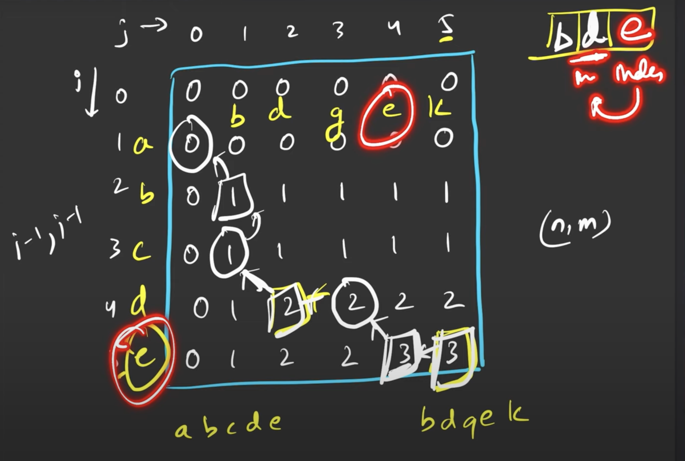

// C++ solution code goes here
#include<bits/stdc++.h>
//Recursion--Tabulation
string func3(string s1, string s2, int n, int m)
{
vector<vector<int>> dp(n+1, vector<int>(m+1, 0));
for(int i = 0; i <= n; i++)
dp[i][0] = 0;
for(int j = 0; j <= m; j++)
dp[0][j] = 0;
for(int i = 1; i <= n; i++)
{
for(int j = 1; j <= m; j++)
{
if(s1[i-1] == s2[j-1])
dp[i][j] = 1 + dp[i-1][j-1];
else
dp[i][j] = max(dp[i-1][j], dp[i][j-1]);
}
}
int i = n;
int j = m;
string ans = "";
while(i > 0 && j > 0)
{
if(s1[i-1] == s2[j-1])
{
ans = s1[i-1]+ans;
i--;
j--;
}
else if(dp[i-1][j] > dp[i][j-1])
{
i--;
}
else
{
j--;
}
}
return ans;
}
string findLCS(int n, int m,string &s1, string &s2){
// Write your code here.
//Tabulation
return func3(s1, s2, n, m);
}
